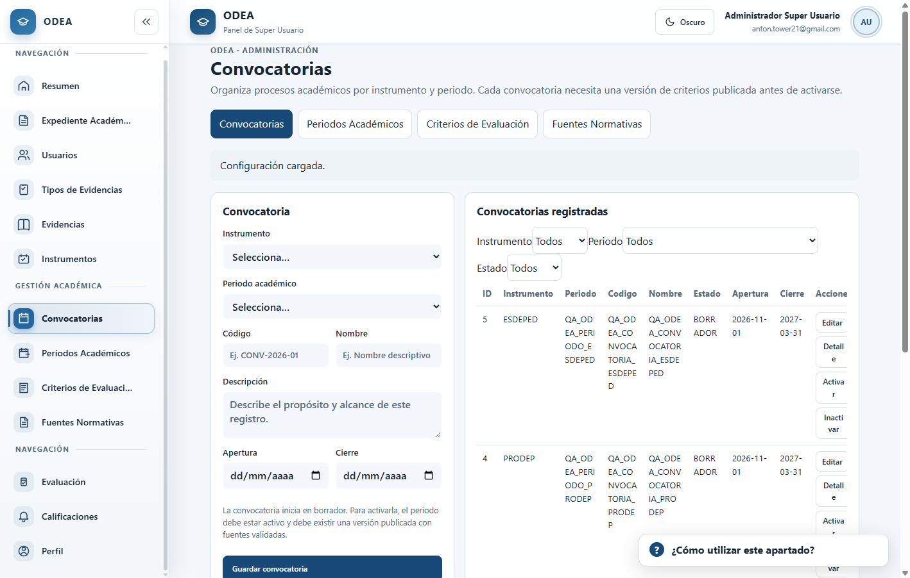
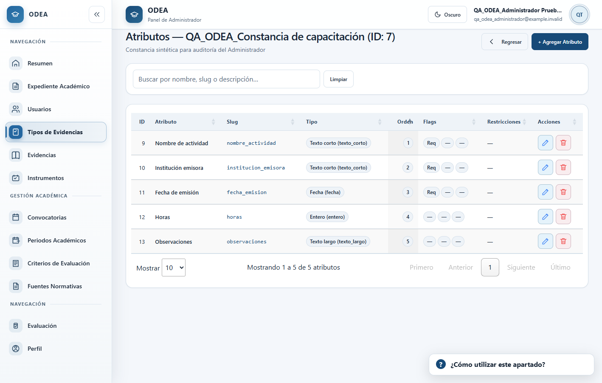
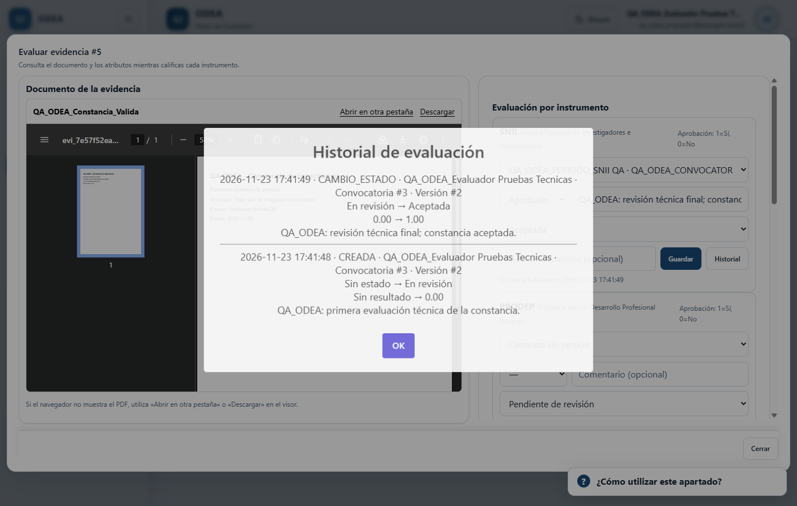
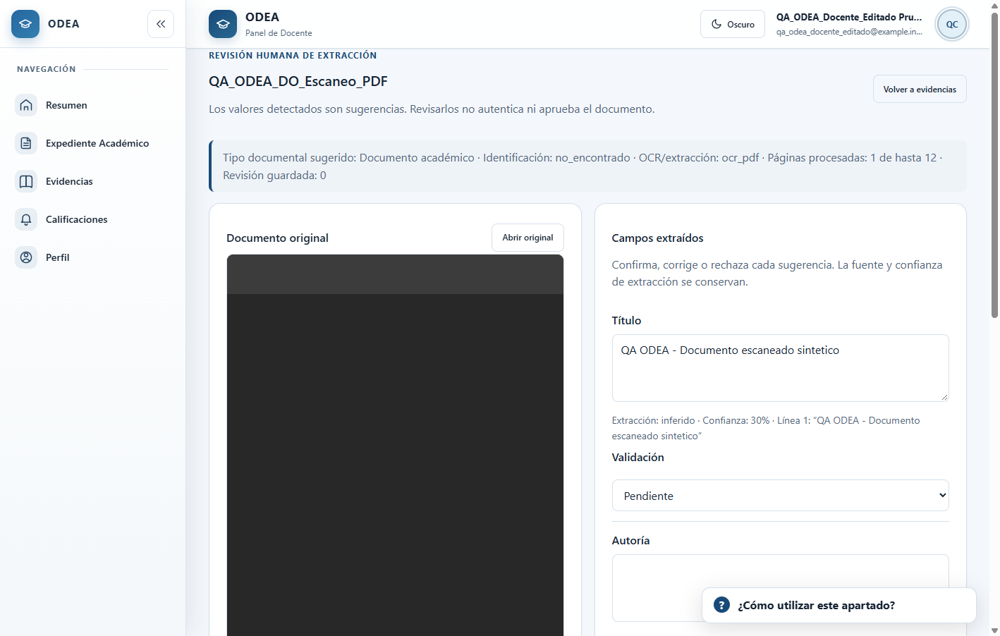
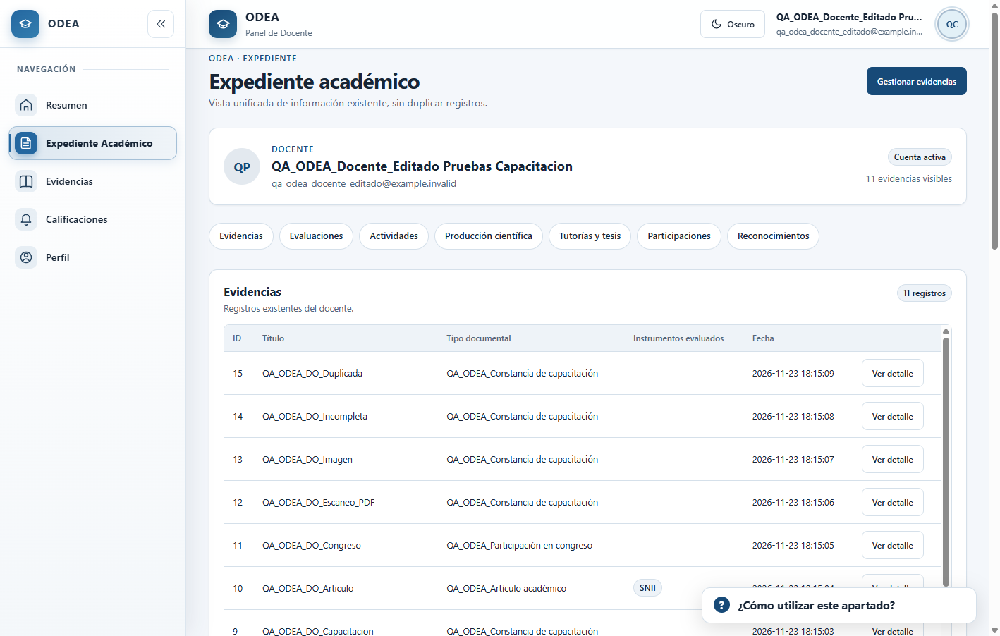

Informe de QA de ODEA
23 de noviembre de 2026 · Entorno aislado, puerto 8088
Dictamen técnico: apto para demostración en QA con limitaciones.
Resultados
50Casos de prueba
47Aprobados
1Fallido
2Bloqueados
Los casos se cuentan por su recorrido principal. Los informes conservan los subcasos pendientes. La auditoría dejó 204 capturas originales.
Capturas por rol










Comprobación en MariaDB
| Registro | Resultado comprobado |
|---|---|
| Usuarios | 7 activos. Las 4 cuentas iniciales coinciden con el respaldo. |
| Convocatorias y versiones | 3 convocatorias QA activas y 3 versiones publicadas. |
| Evidencias | 11 PDF o PNG archivados y 11 SHA-256 verificados. |
| Procesamiento | 6 extracciones locales y 2 revisiones humanas. |
| Evaluaciones | 4 dictámenes versionados y 6 eventos. |
| Integridad | 81 claves foráneas comprobadas, cero huérfanos. |
Consultas del Docente · Inventario persistente · PDF de SNII · ZIP de SNII
Conclusiones
El flujo comprobado cubre configuración, carga, OCR, revisión humana, evaluación versionada y consulta del resultado. El informe registra fallas de extracción estructurada, clasificación sin reglas activas y pruebas de permisos pendientes.